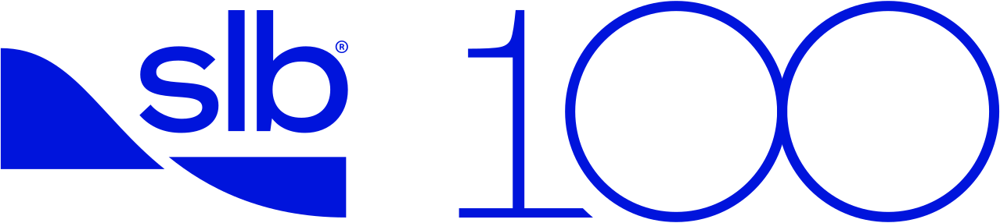

Decision Intelligence × Enhanced Oil Recovery
From Technical Confidence to Authorized Motion: A Decision-Intelligence Read of the Bakken EOR Record
Most EOR projects that stall don't stall because the reservoir model is wrong. They stall earlier — before execution — because no one built the structure that turns technical confidence into an authorized decision. The data is there. The studies are there. And still the pilot sits in review, the capital request circles, and the team keeps asking "do we know enough yet?" This talk works through the question that actually moves projects — not "do we know enough," but "what does our current confidence allow us to responsibly move on now?" We read the recent Bakken EOR record using a specific decision-intelligence framework. Clean and four non-clean states become a vocabulary the room can hold up to its own portfolio; Exit remains a terminal action, not a state.
Public companion reading. SLB presentation materials remain internal.